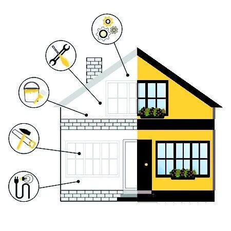
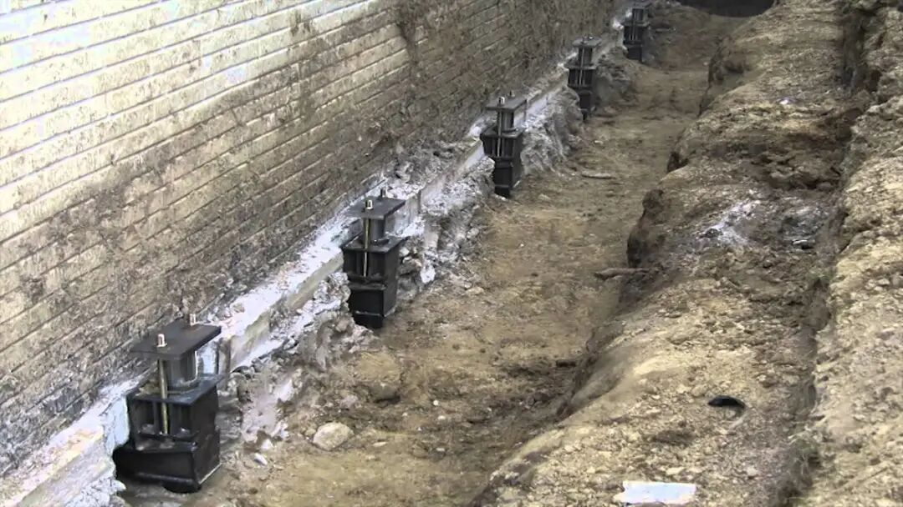
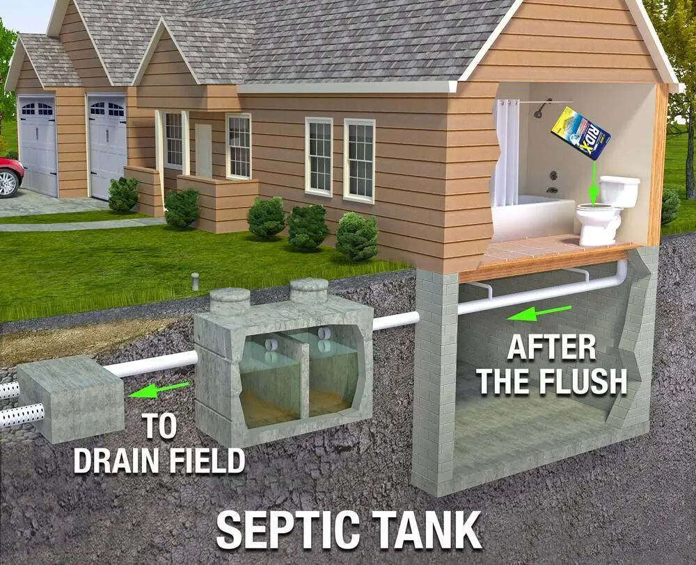
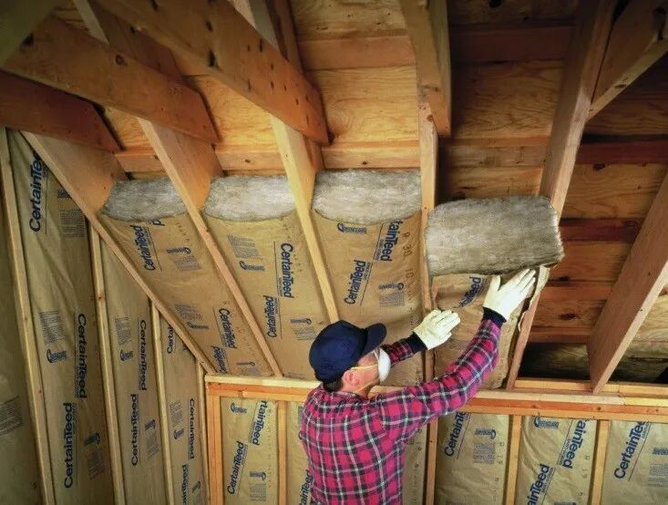
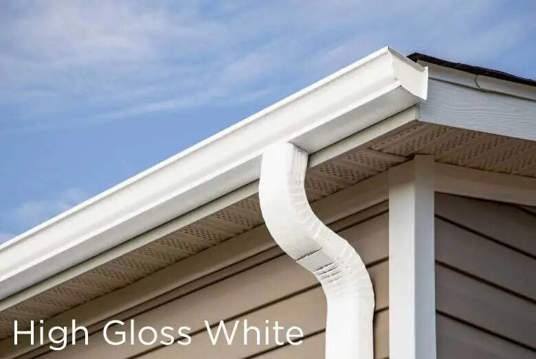
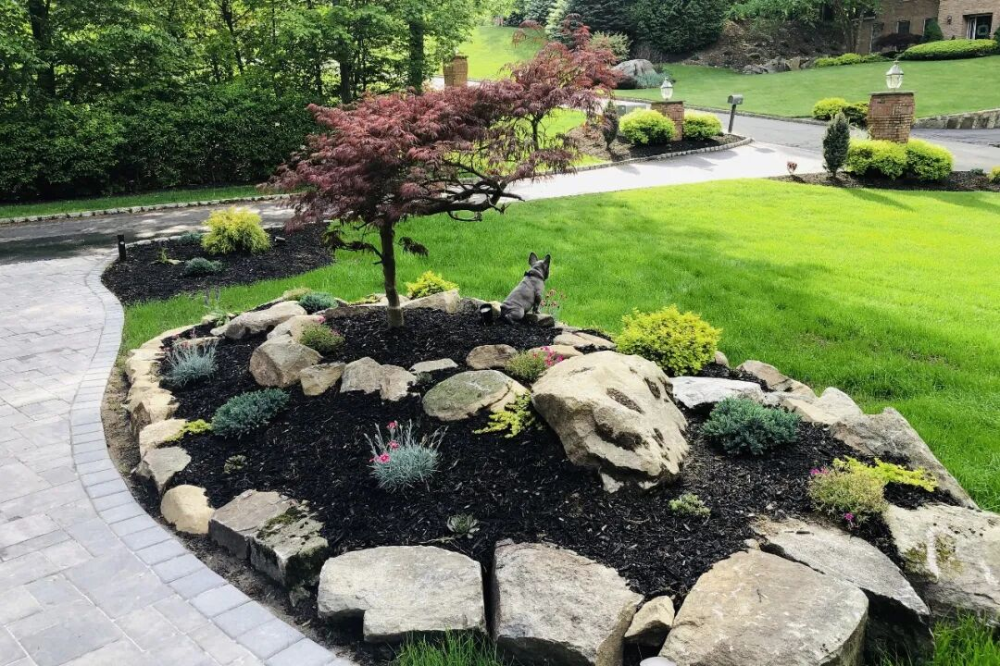

--------点击蓝字关注我--------
--------点击蓝字关注我--------

这周刚刚上了北美地产学堂齐老师的Flipping第四周的课程，趁着刚刚听完印象还比较深，分享一些课堂笔记。
大家往往都知道造房子或者翻新房子非常得繁琐，有很多步骤要做，如果你请了General Contractor（包工头）的话，他会帮你把所有的施工步骤都安排好。
不过造房子这么大的事情，肯定是屋主最上心了。如果自己一点也不懂，全交给包工头的话，万一最后出了问题，那还是得屋主承担损失。所以屋主如果能有一个全局的了解，肯定大有好处。
01
施工总览
施工顺序由两个大的决定因素，一个是施工许可，一个是物理限制。一个好的施工计划往往由这两个因素共同决定。
哪些工程需要施工许可呢？由于不同的地区法规不同，因此相关的施工许可规定也不太一样。
大体上来说，以下这些项目几乎是肯定需要施工许可的：加建，扩建房屋。修/建化粪池，动地基（foundation），动房屋的结构（改承重墙），加/改 水，电，气等。一般这些施工许可都是屋主自己去申请的，或者找画设计图纸的architect去申请。而有一些专项，比如水电气，则可以让对应的sub-contractor自己去申请，因为相对比较简单。

打地基

而下面这些要不要施工许可则看情况：防水/排水，车道/人行道，屋顶，砍树，加/改门，加/改窗，加/填泳池，加保温，加阳台，加挡土墙（这个我有点不知道要干啥）。其中老师特别提到了扩窗，如果一个窗的宽度要变大，则会改变这面墙的承重结构，因此需要施工许可，但是如果只是改变窗的高度或者变窄，则不需要permit。

加保温
砍树
最后是肯定不需要permit的：油漆，门/窗的边框，地板/地毯， 除霉菌，去白蚁，做庭院。
还有如果旧的换新的东西，大部分不需要permit（这一条我不太清楚适用于哪些）。
在考虑完施工许可以后，施工顺序的下一步就取决于物理限制了。举例来说，测绘和施工图肯定是要最先做的，与此同时也可以开始把一些不要的东西拆除，把垃圾扔掉。还有如果说地基有问题，在施工许可下来了以后，也应该最先开始弄，因为在地基的修理中，如果已经装了一些门窗之类的，可能会在动地基的过程中被破坏。除此以外，还有防水排水，水电气入户，化粪池，除霉除白蚁，砍树等，都要在第一阶段做完。
老师推荐多租几个dumpster来扔垃圾
到了第二阶段就是屋子的大框架基本差不多了，要开始做外部的覆盖以及内部大的东西了，比如墙体，结构，窗，外墙，屋顶，雨水槽，以及水电气的rough in。

排水管
在第三阶段，可以弄阳台，门，保温，灰板，边框，踢脚线，车库门等，这些相对来说更加小一点，精细一点。
在最后一个第四个阶段，更多的是内部修饰的工作，以及一些屋外的修缮工作。内部的有油漆，地板/地毯，橱柜/台面，水电气的finish，电器。屋外的有车道/人行道，院墙，庭院等。等全部的结束以后，还需要请人来做最后的inspection，确保没有问题。

庭院的修饰
02
项目管理注意事项
大家找GC干活碰到的一个很常见的问题就是工程队拖工，齐老师专门讲了这个问题的解决方法。一方面在付款的时候尽量少付down pay，尤其是前期需要买入大量材料的项目，可以直接向商家付款，不要让款项经手GC，另一方面可以按照工程进度一部分一部分地付款，做完一部分付一部分。同时在签订合约的时候，约定一个截止日期，从这个日期往后，每晚一天就扣一天工钱。最后在工程结束后，要留一部分尾款，等到最后的检查完成以后再把尾款打给GC。
还有一个很重要的是沟通。一定要定期检查项目的进度，如果是新手最好每三天去一次工地，遇到问题及时地沟通。然后沟通完以后要确保双方理解一致，然后对于原合同修改的东西要在合同里记录下来，避免分歧。
03
如何选GC
老师推荐我们对于GC要货比三家，然后在面试GC的时候有三点注意事项。一是看看他是否守时，如果不守时就不能要了，二是衣着要有GC的感觉，一般GC都开皮卡，货车之类的，然后有干粗活人的感觉。最后要尊重自己的直觉，如果沟通起来感觉不好就不能要。
另外考察GC以前做过的项目以及正在做的项目也很重要。如果GC可以带你去看那个项目就非常好了。在网上也可以确认GC的执照和保险，对于没有执照保险的GC就不太能要。最后要摆正心态，一个GC很难又便宜，质量又好，工期又快，所以要想好自己愿意牺牲哪一方面。
齐老师在第四课还讲了很多别的内容，比如修好了以后卖房子的时候有哪些注意事项，以及一些过户的流程等等。听完这些我基本对于flip房子的整个流程已经有一个清晰的了解了。当然仅仅有理论知识肯定是不够的，还需要很多实践经验来支撑。如果有机会的话，希望可以通过一些小的项目逐渐锻炼自己，培养自己的这方面能力。
今天的文章就到这儿啦，如果对于课程本身感兴趣的可以点击左下角的阅读原文查看。